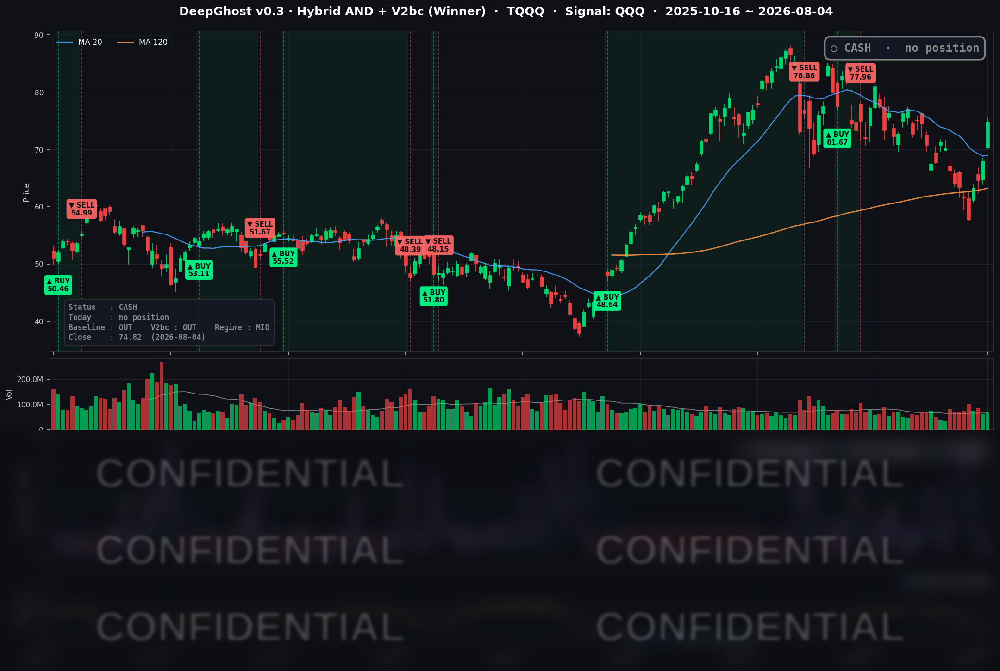

👻 매일 시그널과 히스토리를 홈페이지에서 한눈에 → www.ghostai.co.kr
유가 급락 + 금리 안정되면서 나스닥이 급등했습니다. 이전에 운영하던 V0.2 모델은 매수 시그널이 나왔습니다. 현재 운영 중인 V0.3 역시 오늘 매수 시그널이 나올 것으로 예측됩니다. 분할매수 하시는걸 추천드립니다. 바닥에서 많이 올라와서 쉽게 손이 나가지 않을 것입니다. 단기 주가를 보지 말고 숲을 보시는 습관을 들이세요. 심리를 이기고 룰대로 하면 5년에 400% 수익을 얻을 수 있습니다.
📊 오늘의 매매 신호
| 항목 | 내용 |
|---|---|
| 오늘 할 일 | ✅ 아무것도 안 해도 됩니다 |
| 포지션 상태 | 💵 현금 보유 중 (OUT OF POSITION) |
| 현금 보유 기간 | 2026-06-29 ~ 2026-08-04 (관망 지속) |
| TQQQ 종가 | $74.82 (+10.09%) |
※ V0.2는 매수 시그널이 나왔습니다. 올해 4월 +100%가까이 수익을 냈을때 V0.2가 하루 먼저 매수 시그널이 나왔었습니다. 이번에도 마찬가지내요. 매수할 때입니다.
TQQQ 시그널 — OUT OF POSITION
현재 상태: 현금 보유 중 | 급등 당일에 진입하지 않는 규율 유지

Ghost.AI의 공식 전략 V0.3은 TQQQ를 현금으로 유지했습니다. 모델의 진입 신호는 확율로 판단합니다. 공식 전략은 조금 더 보수적인 면이 있습니다. 오늘/내일 분할 매수 하십시오.
오늘 미국 시장 — 시황 요약
지수 마감
| 지수 | 종가 | 등락률 |
|---|---|---|
| S&P 500 | 7,736.52 | +1.79% |
| 나스닥 종합 | 26,584.99 | +2.59% |
| 다우존스 | 54,085.88 | +1.71% |
| 러셀 2000 | 3,036.98 | +1.85% |
대형주부터 중소형주까지 폭넓게 오른, 전형적인 위험선호(리스크온) 랠리였습니다. 나스닥100(QQQ +3.40%)이 성장주·반도체 강세를 앞세워 상승을 이끌었고, 다우가 상대적으로 완만했습니다. S&P 500과 다우는 신고가 부근까지 다가섰습니다.
국채 금리 동향
| 만기 | 수익률 | 전일 대비 |
|---|---|---|
| 3개월 | 3.730% | +3.0bp |
| 5년 | 4.333% | −6.7bp |
| 10년 | 4.627% | −5.9bp |
| 30년 | 5.190% | −4.1bp |
단기 금리는 소폭 오르고 중장기 금리는 일제히 내렸습니다. 특히 10년물 금리가 -5.9bp 하락했는데, 장기 금리가 내려가면 미래 이익의 가치를 높게 쳐주게 되어 성장주에 우호적입니다. 오늘 나스닥 랠리와 방향이 잘 맞아떨어졌습니다. 장단기 금리 역전은 없고, 커브는 정상적인 우상향을 유지했습니다.
연준 발언 & 금리 패스
오늘은 시장을 크게 움직인 특정 연준 위원 발언은 없었습니다. 하루의 관심이 노동시장 지표(구인·이직 보고서, JOLTS)에 쏠렸기 때문입니다. 현재 연준은 정책금리를 3.50-3.75%로 동결한 상태이며, 위원들 사이에 견해가 갈려 있는 국면입니다. 이번 주 노동지표 결과가 9월 회의의 분위기를 좌우할 핵심 변수입니다.
오늘의 핵심 이슈
- 반도체가 랠리를 견인했습니다. AI 데이터센터 수요 서사가 강하게 부각되며 반도체 종목이 일제히 급등했습니다(인텔 +10.84%, 마이크론 +7.62%, 퀄컴 +7.32%, 브로드컴 +6.61% 등). 필라델피아 반도체지수도 6% 넘게 뛰었습니다.
- 유가 급락이 위험선호를 뒷받침했습니다. WTI가 -6.17%($75.38), 브렌트유가 -5.86%($78.86) 하락했습니다. 호르무즈 해협을 둘러싼 미·이란 외교 진전 기대로 공급 우려가 빠진 결과입니다. 에너지 비용 하락은 물가·소비 측면에서 증시에 우호적입니다.
- 중장기 금리 하락과 금 강세가 함께 나타났습니다. 10년물 금리가 내리며 성장주 밸류에이션을 지지했고, 금 선물은 +2.49%($4,134.2) 올랐습니다. 유가와 달리 금이 오른 점은, 시장에 순수한 낙관만이 아니라 위험 대비 심리도 함께 있었음을 시사합니다.
변동성 & 투자심리
- VIX(공포지수): 16.50 (+4.04%). 지수가 크게 올랐는데도 변동성 지수가 소폭 상승한 점은 이례적입니다. 다만 절대 수준 16.5는 여전히 낮은 편이라 공포 국면은 아닙니다.
- 공포탐욕지수(CNN): 약 58로 '탐욕' 초입입니다. 낙관이 우위이나 극단적 과열은 아닌 상태입니다.
- 종합하면 낙관적입니다. 다만 VIX 상승과 금 강세가 함께 나타난 점은 "낙관 속 경계" 신호로, 전략이 현금을 유지한 신중한 태도와 방향이 통합니다.
매크로 & 원자재
- WTI: $75.38 (−6.17%)
- 브렌트유: $78.86 (−5.86%)
- 금: $4,134.20 (+2.49%)
이번 주는 노동시장 중심입니다. 수요일(8/5) ISM 서비스업 지표, 그리고 금요일(8/7) 7월 고용보고서가 정점입니다. 미·이란 호르무즈 협상은 유가 방향을 가를 양방향 변수로 계속 지켜볼 필요가 있습니다.
주요 종목 동향
| 종목 | 전일 종가 | 당일 종가 | 등락률 | 비고 |
|---|---|---|---|---|
| INTC | 91.00 | 100.86 | +10.84% | AI 데이터센터 수요 서사; 이날 최대 상승 |
| MU | 829.50 | 892.67 | +7.62% | 메모리/HBM AI 수요 랠리 동참 |
| QCOM | 151.57 | 162.67 | +7.32% | 반도체 섹터 랠리 동조 |
| AVGO | 392.23 | 418.16 | +6.61% | AI 반도체 강세 |
| NVDA | 206.64 | 211.94 | +2.56% | AI 대장주, 지수 대비 완만 |
| AAPL | 303.42 | 309.38 | +1.96% | 대형주 랠리 동참 |
| GOOGL | 373.51 | 377.65 | +1.11% | 완만한 상승 |
| MSFT | 487.65 | 492.81 | +1.06% | 완만한 상승 |
| NFLX | 73.33 | 73.57 | +0.33% | 보합권 |
| TSLA | 322.08 | 327.35 | +1.64% | 상승 |
| META | 590.24 | 587.94 | −0.39% | 랠리 속 소폭 약세 |
| AMZN | 284.02 | 277.42 | −2.32% | 실적 발표 이후 차익실현 성격 |
Ghost.AI — Quantitative AI Investment
Model: DeepGhost v0.3 | Transformer-Based Deep Learning
Coverage: 13 tickers | Updated every trading day after US market close
⚠️ 본 자료는 정보 제공 목적으로만 작성되었으며 투자 권유가 아닙니다. 모든 투자의 책임은 투자자 본인에게 있습니다. 과거 성과가 미래 수익을 보장하지 않습니다.
[유의사항]
- 본 서비스는 불특정 다수를 대상으로 발행되는 단방향 정보 제공 서비스이며, 투자자 개인의 재산 상황·투자 목적·위험 선호도를 반영한 개별 투자 조언이 아닙니다.
- 고스트에이아이 주식회사는 고객과 쌍방향 의사소통(개별 상담, 맞춤형 자문 등)을 제공하지 않습니다.
- 본 콘텐츠는 투자 권유 또는 매매 주문의 청약·청약의 권유에 해당하지 않으며, 최종 투자 판단 및 그에 따른 손익의 책임은 전적으로 투자자 본인에게 있습니다.
고스트에이아이 주식회사